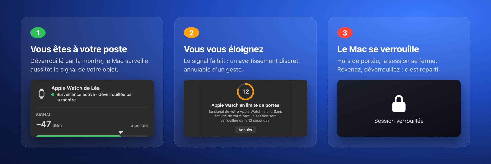
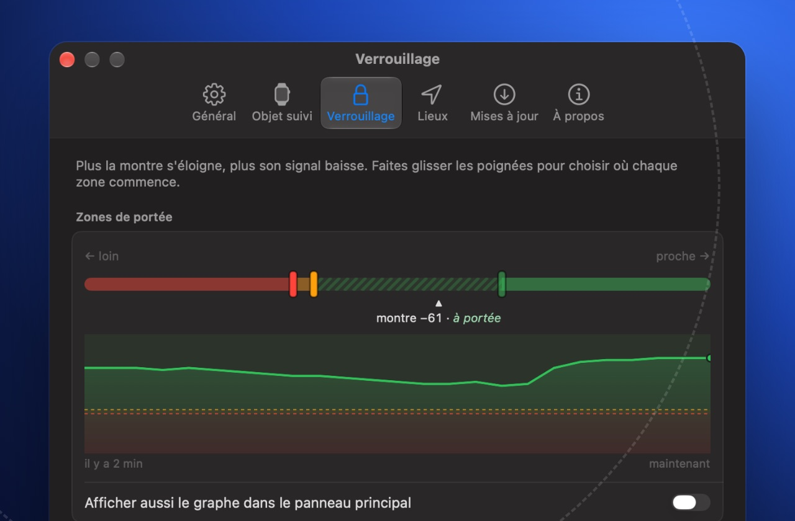
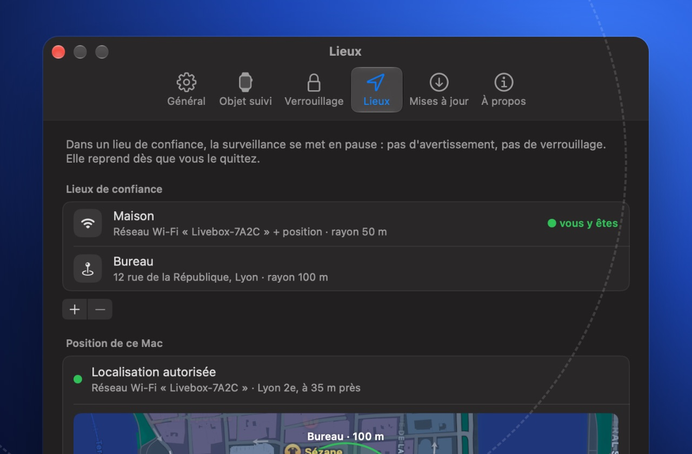
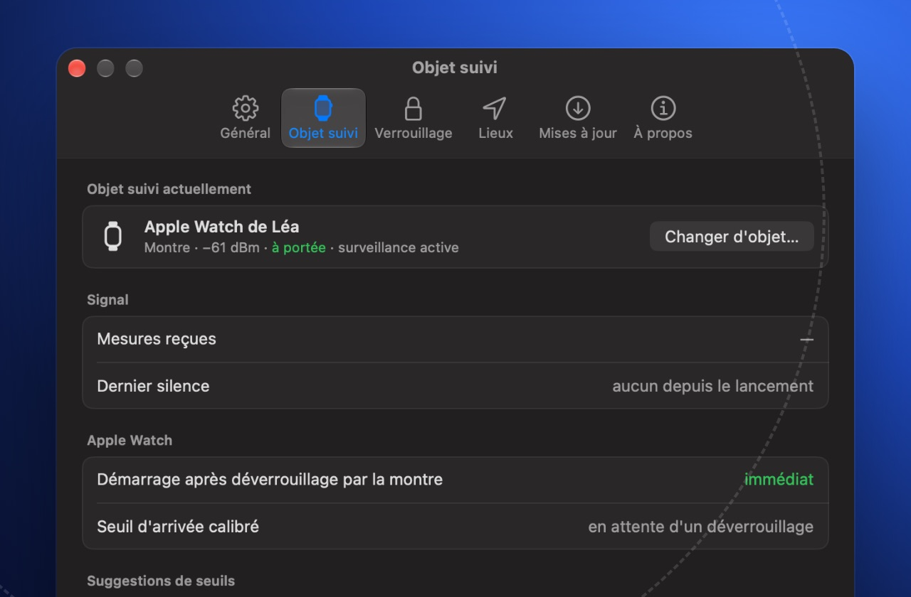
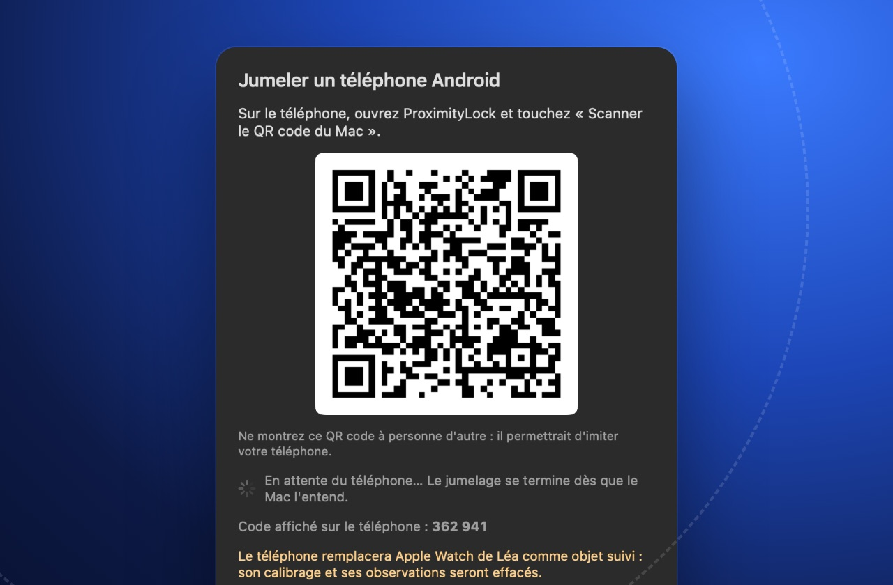

Comment ça marche

ProximityLock mesure en continu le signal Bluetooth d'un objet que vous gardez sur vous. Quand il faiblit, vous vous êtes éloigné : un avertissement, puis la session se verrouille. Pas de compte, pas de serveur : tout se passe sur votre Mac.
Ce qu'il sait faire

Réglé à votre bureau
Trois zones — arrivée, limite de portée, hors de portée — que vous placez d'un glissement. Après une semaine, ProximityLock vous suggère les seuils qui collent à vos habitudes.

Lieux de confiance
À la maison, la surveillance se met en pause toute seule : le lieu est reconnu à votre réseau Wi-Fi, à votre adresse, ou aux deux.

Avec l'objet de votre choix
Apple Watch, iPhone, AirPods… n'importe quel objet Bluetooth que vous emportez avec vous. Avec l'Apple Watch, la surveillance démarre dès le déverrouillage par la montre.

Aussi avec un téléphone Android
Le compagnon Android émet un code qui change toutes les 30 secondes : impossible de l'imiter en le copiant. Le jumelage se fait en scannant un QR code.
Et aussi : le graphe du signal des deux dernières minutes (Réglages → Verrouillage, et dans le panneau si vous le souhaitez), et un thème clair, sombre ou celui du système.
Installer
- Téléchargez
ProximityLock-<version>.dmgdans la dernière version, ouvrez-le et glissez ProximityLock dans Applications. - Au premier lancement, macOS demande une confirmation : Réglages Système → Confidentialité et sécurité → Ouvrir quand même.
- L'assistant vous guide : autorisation Bluetooth, objet à suivre, ouverture à la session.
Compagnon Android
Pour suivre un téléphone Android, installez le compagnon sur le téléphone : le fichier ProximityLock-compagnon-<version>.apk est joint à la version macOS où il a changé (aujourd'hui la version 1.4). Ouvrez la page de cette version depuis le téléphone, téléchargez le fichier et ouvrez-le, puis jumelez le téléphone depuis le Mac (Réglages → Objet suivi → Changer d'objet… → Jumeler…). Android 8 ou plus récent.
Questions fréquentes
Mes données quittent-elles le Mac ?
Non. Le signal mesuré, vos réglages, vos lieux et votre position restent sur le Mac. ProximityLock ne contacte GitHub que pour chercher les mises à jour, et le service Plans d'Apple quand vous cherchez une adresse pour un lieu de confiance.
Pourquoi macOS dit-il que l'app ne vient pas de l'App Store ?
ProximityLock est distribué en dehors de l'App Store et signé par NoktuaLabs, sans passer par la notarisation d'Apple. macOS demande donc une confirmation au premier lancement, une seule fois (Réglages Système → Confidentialité et sécurité → Ouvrir quand même).
Comment se font les mises à jour ?
ProximityLock vérifie les nouvelles versions (chaque jour par défaut) et vous les propose, ou les installe seul si vous l'avez choisi. Avant d'installer, il vérifie que la nouvelle version est signée par le même certificat que lui : une app modifiée serait refusée.
Et si ma montre n'a plus de batterie ?
Pour ProximityLock, un objet qui n'émet plus est un objet parti : la session se verrouille si « Verrouiller aussi si le signal disparaît » est coché (c'est le réglage par défaut). Vous déverrouillez ensuite comme d'habitude.
ProximityLock déverrouille-t-il aussi le Mac ?
Non. Il ne fait que verrouiller. Le déverrouillage reste celui de macOS : mot de passe, Touch ID ou Apple Watch.
Et si la session se verrouille alors que je suis à mon bureau ?
Un avertissement de quelques secondes précède le verrouillage : un mouvement de souris l'annule. Les seuils se règlent dans Réglages → Verrouillage, et ProximityLock vous suggère après une semaine des seuils adaptés à votre poste.